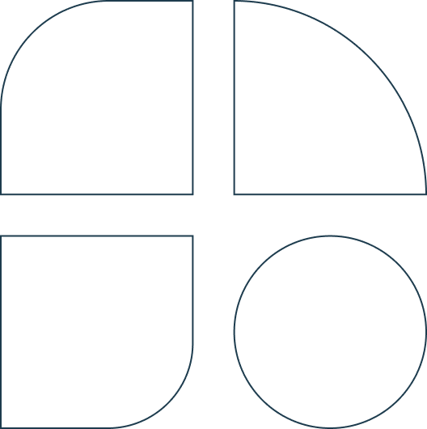
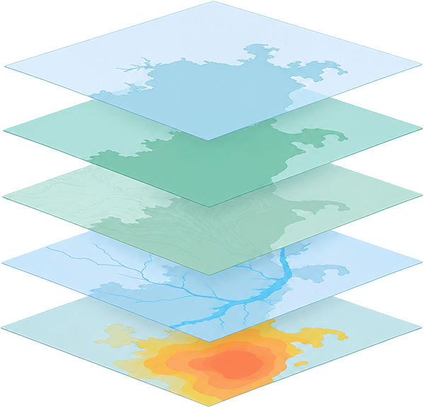
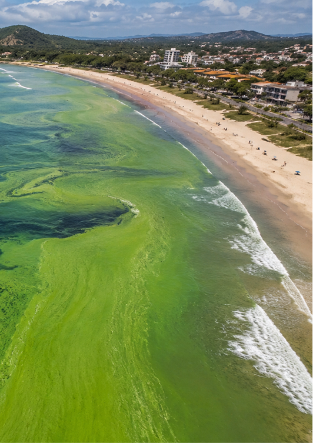
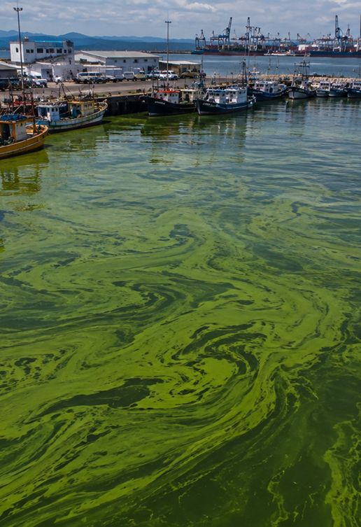
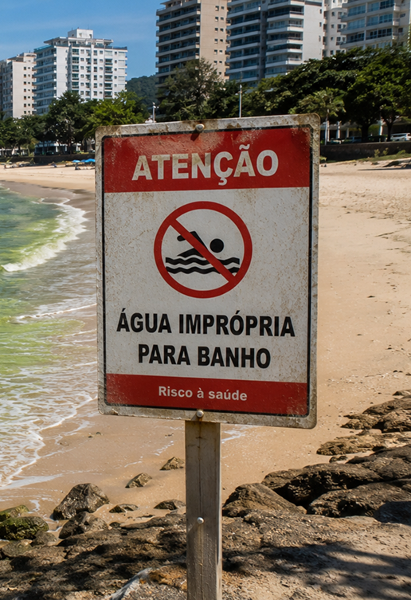
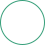

Projeto Algamar 2026
Conheça a Algamar.
Software de previsibilidade
de algas tóxicas.
Acessar Software

Algamar
Uma nova forma de
observar o litoral.
Nosso objetivo é transformar dados ambientais em informações úteis para antecipar períodos de risco de floração e apoiar decisões no litoral de São Paulo, de Ubatuba a Cananéia.
Saiba como funciona-
Vento medido por satélite (Copernicus) e chuva da estação do CEBIMar/USP, em São Sebastião, entram no índice de condições propícias para cada espécie tóxica. Vento de sul e frentes frias acompanharam as florações de Dinophysis de 2016 e 2024.
-
Temperatura e salinidade da superfície e camada de mistura, mês a mês desde 2000 (satélite e reanálise GLORYS). Também testamos as correntes de um modelo oceânico de 1,5 km: elas não melhoraram a previsão e ficaram de fora.
-
A clorofila-a de satélite (Copernicus, 4 km, diária) é o principal dado do mapa de risco. Nutrientes, oxigênio e contagem de células ainda não entram: não há série pública desses dados para o litoral paulista.
-
Um conjunto de 8 modelos XGBoost, treinado com dados de 2000 a 2018, estima para cada ponto de 4 km a chance de floração em cada um dos próximos 12 meses.
-
Quatro níveis (baixo, moderado, alto e muito alto) para 2.406 pontos do mar e 14 municípios. No nível muito alto (80% ou mais), a floração se confirmou em 88% a 99% dos casos testados.

O problema
Por que nos preocupar?
As florações de algas podem alterar o equilíbrio dos ambientes aquáticos, afetar atividades econômicas e, em alguns casos, estar associadas à produção de toxinas que representam riscos à saúde humana e animal.

Impacto ambiental
Florações mudam a cor da água e podem matar peixes e outros animais. Em março de 2019, uma maré vermelha com mais de 2 milhões de células por litro tomou o canal de São Sebastião (CEBIMar/USP).
Ler mais
Impactos econômicos
As florações de algas tóxicas causam prejuízos à pesca, ao turismo e à maricultura. Em 2016, uma floração de Dinophysis vinda do Sul levou à interdição de moluscos na Baixada Santista e no Litoral Norte durante o segundo semestre.
Ler mais
Riscos à saúde
Mexilhões e ostras filtram a água e acumulam toxinas sem mudar de aspecto. De 2023 a 2026, o monitoramento estadual suspendeu a retirada de moluscos 6 vezes por toxina diarreica acima do limite, em Ubatuba e Caraguatatuba.
Ler maisA pesquisa
Testamos se dava para prever.
Em parte, dava.
O estudo que originou a Algamar comparou a probabilidade calculada pelo modelo com as florações vistas por satélite em quase cinco anos que o modelo nunca viu no treino. Também testamos se simular as correntes do oceano melhorava a previsão: não melhorou.
Desenho do estudo
Título
Mapa de Risco de Floração Algamar: clorofila e temperatura de satélite com a climatologia histórica do litoral de São Paulo
Área
2.406 pontos de 4 km, de Ubatuba a Cananéia, agrupados em 14 municípios do Litoral Norte, Baixada Santista e Litoral Sul
Período
Jan/2000 a set/2026 · treino até 2018, ajuste em 2019–2021 e teste de 2022 a 2026
Dados
Clorofila-a (Copernicus) e temperatura da superfície (OSTIA) diárias. Floração = clorofila máxima do mês acima de 1,5 mg/m³
Método
8 modelos XGBoost que partem da climatologia de cada ponto e mês e aprendem o desvio, de 1 a 12 meses à frente
Validação
1,46 milhão de previsões em meses nunca vistos no treino, comparadas com a climatologia e a persistência
Probabilidade prevista × floração observada · teste 2022–2026
0%
Dos alertas altos se confirmaram
0%
Das florações foram detectadas
0
Meses de horizonte de previsão
Validação retrospectiva (hindcast), ainda sem conferência em tempo real. "Floração" aqui é clorofila alta vista por satélite, não toxina confirmada. O modelo quase empata com a média histórica (PR-AUC 0,88 contra 0,87): mostra bem onde e quando costuma florescer, mas não antecipa anos fora do padrão.
Sobre nós
Quem está por trás da Algamar.
Somos um grupo de estudantes de Análise e Desenvolvimento de Sistemas, e este software foi desenvolvido como parte de um projeto universitário. A iniciativa surgiu a partir de uma proposta do professor, que nos incentivou a desenvolver um projeto inovador, fora do cotidiano acadêmico, explorando a criação de um software com caráter preditivo e aplicação prática.

TMTulio Medeiros
Frontend Developer & UX/UI Designer
UX, fluxos de navegação e prototipação, Desenvolvimento do frontend e interfaces
Gabriela Hipólito
Pesquisadora / Documentação
Documentação técnica, científica e institucional, Artigo científico e relatórios
Igor Henrique
Software Architect, Machine Learning
Arquitetura, infraestrutura, implantação e versões, Mecanismo preditivo e Machine Learning
João Victor
Backend Developer / Data Analyst
Coleta, tratamento e análise de dados, Banco de dados e governança, Backend, serviços, APIs e integrações
João Francisco
Software Architect, Machine Learning
Arquitetura, infraestrutura, implantação e versões, Mecanismo preditivo e Machine Learning
Tailaine Pereira
QA & Security Analyst / Product Analyst
Levantamento e validação de requisitos, Testes, segurança e qualidade
Joicy Nunes
Gestão de Projetos / Pesquisadora
Gestão, planejamento, acompanhamento e integração, Levantamento bibliográfico e fundamentação teórica